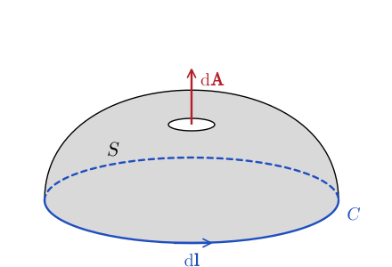
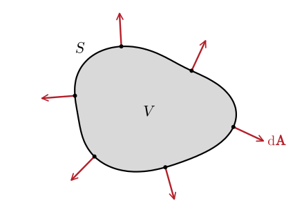
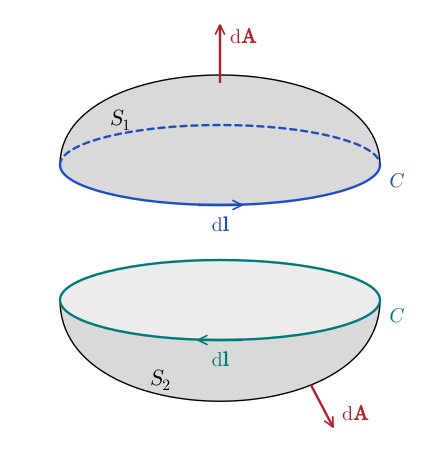

Appendix A — Vector Calculus
This chapter is in preparation.
Fluid mechanics is most concisely and generally written in the language of vector calculus. This appendix gives key definitions and theorems used throughout the rest of these notes. A more extended, but still concise treatment can be found in Griffiths (2023, chap. 1 and Appendix A). The point of view we follow in these notes is geometrical: we will introduce the elements of vector calculus in terms of geometrical/physical quantities without reference to any coordinate system.
A.1 Vector fields
Definition A.1 (Point) We define a point to be an element of three-dimensional Euclidean space \(\mathbb{E}^3\). We will denote points with capital letters, \(A, B, C \in \mathbb{E}^3\).
In a given coordinate system, the position of a point is given by three numbers \(x_1, x_2, x_3\) and we will write, with slight abuse of notation, \(A = (x_1, x_2, x_3)\). For example, in Cartesian coordinates each point will be associated to one triple \(A = (x,y,z)\), while in spherical coordinates the same point will be written as \(A = (r,\theta,\phi)\).
Definition A.2 (Vector) A vector is a translation of Euclidean space, that is, a shift that moves every point by the same distance in the same direction. For any two points \(A\) and \(B\) there is exactly one translation that moves \(A\) to \(B\). We denote it by \(\overrightarrow{AB} = B - A\).
We can picture \(\overrightarrow{AB}\) as an arrow connecting \(A\) to \(B\), and pointing from \(A\) to \(B\). Since a translation moves all points in the same way, the arrow can be moved parallel to itself without changing the vector: \(\overrightarrow{AB} = \overrightarrow{CD}\) whenever \(A\), \(B\), \(D\), and \(C\) are the vertices of a parallelogram. We will choose a special point in Euclidean space called the origin \(O\) and define as the position vector of a point \(P\) the vector \(\mathbf{r}_P := \overrightarrow{OP}\).
Most frequently, we deal with vector fields in these notes. An example is the fluid velocity \(\mathbf{v}\). Vector fields associate to each point in Euclidean space a vector in another Euclidean space, e.g., the space of velocities in the case of \(\mathbf{v}\).
Vector fields can be decomposed over a vector basis as \[ \mathbf{v} = v_1(x_1,x_2,x_3) \mathbf{e}_1 + v_2(x_1,x_2,x_3) \mathbf{e}_2 + v_3(x_1,x_2,x_3) \mathbf{e}_3, \tag{A.1}\] where \(\mathbf{e}_1, \mathbf{e}_2, \mathbf{e}_3\) are, at each point, linearly independent vectors. For example, the Cartesian basis is \(\mathbf{e}_1 = \hat{\mathbf{x}}\), \(\mathbf{e}_2 = \hat{\mathbf{y}}\), and \(\mathbf{e}_3 = \hat{\mathbf{z}}\). Alternatively, we might take a spherical basis \(\mathbf{e}_1 = \hat{\mathbf{r}}\), \(\mathbf{e}_2 = \hat{\boldsymbol{\theta}}\), and \(\mathbf{e}_3 = \hat{\boldsymbol{\phi}}\). Note that, in the latter case, the basis vectors are themselves position dependent, since, e.g., the radial direction is different for different \((\theta,\phi)\). This must be taken into account when computing derivatives of vector fields in the spherical basis. Note that, because vector fields live in a different space from the coordinates, we can, in principle, combine vector basis and coordinate choices in an arbitrary way. For example, we could work in spherical coordinates, but still consider the \(\hat{\mathbf{x}}\), \(\hat{\mathbf{y}}\), and \(\hat{\mathbf{z}}\) components of vector fields. In practice, throughout these notes we will use the vector basis naturally associated with the chosen coordinate system. For a coordinate system \((x_1, x_2, x_3)\), the natural vector basis is chosen so that the unit vector \(\mathbf{e}_i\) points along the direction in which \(x_i\) increases, while all other coordinates are kept constant. In other words, the natural basis is formed by unit vectors that are tangent to the coordinate lines.
A.2 Gradient
Definition A.3 (Gradient) If \(f\) is a scalar function, we define its gradient \(\nabla f\) as being the only vector field such that, for every pair of points \(A\) and \(B\) and any (smooth) curve connecting them \[ f(B) - f(A) = \int_A^B \nabla f \cdot \mathrm{d} \mathbf{l}. \tag{A.2}\]
In Cartesian coordinates, we can find the expression of the gradient by considering two points \(A = (x,y,z)\) and \(B = (x+\mathrm{d} x, y+\mathrm{d} y, z + \mathrm{d} z)\). Taylor expanding to first order, the LHS of Equation A.2 is \[ f(B) - f(A) = f(x+\mathrm{d} x, y+\mathrm{d} y, z + \mathrm{d} z) - f(x,y,z) = \partial_x f \mathrm{d} x + \partial_y f \mathrm{d} y + \partial_z f \mathrm{d} z . \tag{A.3}\] The RHS is \[ \int_A^B \nabla f \cdot \mathrm{d} \mathbf{l} = (\nabla f)_x {} \mathrm{d} x + (\nabla f)_y {} \mathrm{d} y + (\nabla f)_z {} \mathrm{d} z , \tag{A.4}\] so we conclude that \[ \nabla f = \left(\begin{array}{c} \partial_x f \\ \partial_y f \\ \partial_z f \end{array} \right). \tag{A.5}\] For the generalization to curvilinear coordinates, see Griffiths (2023, Appendix A).
Note that the definition of gradient can be extended to vectors. In this case the gradient is a matrix \(\nabla \mathbf{v}\) such that \[ \mathbf{v}(B) - \mathbf{v}(A) = \int_A^B (\nabla\mathbf{v}) \cdot \mathrm{d} \mathbf{l}. \tag{A.6}\] The dot in the integral denotes a matrix–vector multiplication, \([(\nabla\mathbf{v}) \cdot \mathrm{d}\mathbf{l}]_i = \sum_j (\nabla\mathbf{v})_{ij}\, \mathrm{d} l_j\). Repeating the calculation done for Equation A.5 for each component of \(\mathbf{v}\), we find that, in Cartesian coordinates, \[ (\nabla\mathbf{v})_{ij} = \partial_j v_i , \tag{A.7}\] that is, the \(i\)-th row of \(\nabla\mathbf{v}\) is the gradient of \(v_i\). Be aware that some textbooks use the transposed convention, \((\nabla\mathbf{v})_{ij} = \partial_i v_j\). The derivative of \(\mathbf{v}\) along a vector \(\mathbf{a}\) is written as \[ (\mathbf{a}\cdot\nabla)\mathbf{v} = (\nabla\mathbf{v}) \cdot \mathbf{a} , \qquad \left[ (\mathbf{a}\cdot\nabla)\mathbf{v} \right]_i = \sum_j a_j \partial_j v_i . \tag{A.8}\]
A.3 Curl
Definition A.4 (Curl) Given a vector field \(\mathbf{v}\), we define its curl \(\nabla\times\mathbf{v}\) as being the only vector field such that, for every smooth two-dimensional surface \(S\) bounded by a closed curve \(C\), we have \[ \oint_C \mathbf{v} \cdot \mathrm{d}\mathbf{l} = \int_S (\nabla\times\mathbf{v}) \cdot \mathrm{d} \mathbf{A}, \tag{A.9}\] where \(\mathrm{d}\mathbf{A} = \hat{\mathbf{n}}\, \mathrm{d} A\), \(\hat{\mathbf{n}}\) is the unit normal to \(S\), and the direction in which \(C\) is traversed is related to \(\hat{\mathbf{n}}\) by the right-hand rule (Figure A.1).

The expression in Equation A.9 is known as Stokes’ theorem. We take it as the operational definition of the curl. In Cartesian coordinates, the curl can be written as the following formal determinant \[ \nabla\times\mathbf{v} = \left| \begin{array}{ccc} \hat{\mathbf{x}} & \hat{\mathbf{y}} & \hat{\mathbf{z}} \\ \partial_x & \partial_y & \partial_z \\ v_x & v_y & v_z \end{array} \right| = \left( \partial_y v_z - \partial_z v_y \right) \hat{\mathbf{x}} + \left( \partial_z v_x - \partial_x v_z \right) \hat{\mathbf{y}} + \left( \partial_x v_y - \partial_y v_x \right) \hat{\mathbf{z}}. \tag{A.10}\] This is formally the same expression as the vector product between the “vector” \(\nabla = \partial_x \hat{\mathbf{x}} + \partial_y \hat{\mathbf{y}} + \partial_z \hat{\mathbf{z}}\) and \(\mathbf{v}\). However, note that this equivalence breaks down in curvilinear coordinates.
A.4 Divergence
Definition A.5 (Divergence) Given a vector field \(\mathbf{v}\), we define its divergence \(\nabla\cdot\mathbf{v}\) as being the only scalar field such that, for every closed surface \(S\) enclosing a volume \(V\), we have \[ \oint_S \mathbf{v} \cdot \mathrm{d} \mathbf{A} = \int_V \nabla \cdot \mathbf{v}\, \mathrm{d} V, \tag{A.11}\] where \(\mathrm{d}\mathbf{A} = \hat{\mathbf{n}}\, \mathrm{d} A\) and \(\hat{\mathbf{n}}\) is the outward-pointing unit normal to \(S\) (Figure A.2).

The expression in Equation A.11 is known as Gauss’ theorem, or the divergence theorem. In Cartesian coordinates, we can find the expression for the divergence by considering Equation A.11 applied to a rectangular region centered at \((x,y,z)\) with sides of length \(\mathrm{d} x\), \(\mathrm{d} y\), and \(\mathrm{d} z\). The derivation is analogous to the calculation leading to Equation 1.12 in Chapter 1 and will not be repeated here. The result is that \[ \nabla\cdot\mathbf{v} = \partial_x v_x + \partial_y v_y + \partial_z v_z. \tag{A.12}\] This is formally the same expression as if we were to take the dot product between \(\nabla\) and \(\mathbf{v}\). However, once again, this equivalence breaks down in curvilinear coordinates.
The divergence can be extended to tensor fields, such as the stress tensors that appear in the equations of fluid dynamics.
Definition A.6 (Divergence of a tensor) Given a tensor field \(\mathbf{T}\), we define its divergence \(\nabla\cdot\mathbf{T}\) as being the only vector field such that, for every closed surface \(S\) enclosing a volume \(V\), we have \[ \oint_S \mathbf{T} \cdot \mathrm{d} \mathbf{A} = \int_V \nabla \cdot \mathbf{T}\, \mathrm{d} V, \tag{A.13}\] where \((\mathbf{T}\cdot\mathrm{d}\mathbf{A})_i = \sum_j T_{ij}\, \mathrm{d} A_j\).
In Cartesian coordinates, the \(i\)-th component of the LHS of Equation A.13 is the flux of the vector field formed by the \(i\)-th row of \(\mathbf{T}\), \((T_{ix}, T_{iy}, T_{iz})\). Applying Equation A.11 to each row, we find \[ (\nabla\cdot\mathbf{T})_i = \partial_x T_{ix} + \partial_y T_{iy} + \partial_z T_{iz} . \tag{A.14}\] For a symmetric tensor, \(T_{ij} = T_{ji}\), it does not matter which index is summed over. All the stress tensors in these notes are symmetric.
A.5 Laplacian
Definition A.7 (Laplacian) If \(f\) is a scalar function, we define its Laplacian as \(\nabla^2 f = \nabla\cdot(\nabla f)\). If \(\mathbf{v}\) is a vector field, we define its Laplacian as \(\nabla^2 \mathbf{v} = \nabla\cdot(\nabla \mathbf{v})\).
In Cartesian coordinates \[ \nabla^2 f = \partial_x^2 f + \partial_y^2 f + \partial_z^2 f. \tag{A.15}\]
From Equation A.7 and Equation A.14, the Cartesian components of \(\nabla^2\mathbf{v}\) are the Laplacians of the components of \(\mathbf{v}\), \((\nabla^2\mathbf{v})_i = \nabla^2 v_i\). This is not true for the components in a curvilinear basis.
A.6 Vector identities
The identities involving derivatives of vector fields that we use in these notes, such as the product rules (Equation B.2) and the expression for the advective term (Equation B.5), are collected in Appendix B. They can all be verified by writing them out in Cartesian components. However, because gradient, curl, and divergence are geometrical objects, these identities hold in any coordinate system. Here, we prove two particularly important identities.
Theorem A.1 (Curl of a gradient and divergence of a curl) For any smooth scalar field \(f\) and vector field \(\mathbf{a}\), \[ \nabla \times (\nabla f) = 0 , \qquad \nabla \cdot (\nabla \times \mathbf{a}) = 0 . \tag{A.16}\]

Proof. For the first identity, consider any surface \(S\) bounded by a closed curve \(C\). By Equation A.9 and Equation A.2, \[ \int_S [\nabla \times (\nabla f)] \cdot \mathrm{d}\mathbf{A} = \oint_C \nabla f \cdot \mathrm{d}\mathbf{l} = f(P) - f(P) = 0 , \tag{A.17}\] because a closed curve starts and ends at the same point \(P\). Since this holds for every surface, \(\nabla \times (\nabla f) = 0\).
For the second identity, consider a closed surface \(S\) enclosing a volume \(V\), and cut it along a closed curve \(C\) into two pieces \(S_1\) and \(S_2\) (Figure A.3). Applying Equation A.9 to each piece, with \(\mathrm{d}\mathbf{A}\) pointing out of \(V\), we find \[ \begin{aligned} \oint_S (\nabla \times \mathbf{a}) \cdot \mathrm{d}\mathbf{A} &= \int_{S_1} (\nabla \times \mathbf{a}) \cdot \mathrm{d}\mathbf{A} \\ &\quad {} + \int_{S_2} (\nabla \times \mathbf{a}) \cdot \mathrm{d}\mathbf{A} \\ &= \oint_C \mathbf{a} \cdot \mathrm{d}\mathbf{l} - \oint_C \mathbf{a} \cdot \mathrm{d}\mathbf{l} = 0 . \end{aligned} \tag{A.18}\] The two line integrals have opposite signs because the outward normals of \(S_1\) and \(S_2\) lie on opposite sides of \(C\), so the right-hand rule traverses \(C\) in opposite directions. By Equation A.11, the integral of \(\nabla \cdot (\nabla \times \mathbf{a})\) then vanishes over every volume, so \(\nabla \cdot (\nabla \times \mathbf{a}) = 0\).
A.7 In-class worksheet
Compute the gradient of the function \[ f (x, y, z) = \frac{x}{\sqrt{x^2 + y^2 + z^2}} . \tag{A.19}\]
Consider the vector field \[ \mathbf{E}= \hat{\mathbf{r}} = \left(\begin{array}{c} \frac{x}{\sqrt{x^2 + y^2 + z^2}}\\ \frac{y}{\sqrt{x^2 + y^2 + z^2}}\\ \frac{z}{\sqrt{x^2 + y^2 + z^2}} \end{array}\right) . \tag{A.20}\] Its gradient \(\nabla \mathbf{E}\) is the matrix \[ \begin{pmatrix} \partial_x E_x & \partial_y E_x & \partial_z E_x\\ \partial_x E_y & \partial_y E_y & \partial_z E_y\\ \partial_x E_z & \partial_y E_z & \partial_z E_z \end{pmatrix} . \tag{A.21}\] Compute
the gradient \(\nabla \mathbf{E}\);
\(\nabla \cdot \mathbf{E}\);
\(\nabla \times \mathbf{E}\).
Prove that \[ \nabla \cdot \nabla f = \nabla^2 f = \frac{\partial^2 f}{\partial x^2} + \frac{\partial^2 f}{\partial y^2} + \frac{\partial^2 f}{\partial z^2} . \tag{A.22}\]
The divergence of a tensor field \[ \mathbf{T}= \left(\begin{array}{ccc} T_{x x} & T_{x y} & T_{x z}\\ T_{y x} & T_{y y} & T_{y z}\\ T_{z x} & T_{z y} & T_{z z} \end{array}\right) \tag{A.23}\] is the vector with components \[ \begin{aligned} (\nabla \cdot \mathbf{T})_x &= \partial_x T_{x x} + \partial_y T_{x y} + \partial_z T_{x z} , \\ (\nabla \cdot \mathbf{T})_y &= \partial_x T_{y x} + \partial_y T_{y y} + \partial_z T_{y z} , \\ (\nabla \cdot \mathbf{T})_z &= \partial_x T_{z x} + \partial_y T_{z y} + \partial_z T_{z z} . \end{aligned} \tag{A.24}\] Prove that \[ \nabla \cdot (p\mathbf{I}) = \nabla \cdot \left(\begin{array}{ccc} p & & \\ & p & \\ & & p \end{array}\right) = \nabla p. \tag{A.25}\]